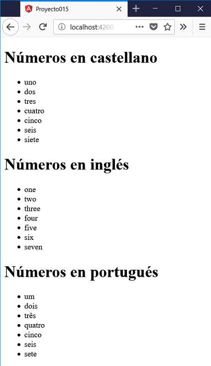

Vimos en el concepto anterior que una pipe tiene por objetivo convertir un dato en la vista de la componente (html) con la finalidad que el usuario tenga una mejor experiencia.
El framework Angular provee un conjunto de pipes por defecto como pueden ser: uppercase, lowercase, json, date etc
Pero lo más importante que tenemos es que Angular nos permite crear nuestras propias pipes que se adapten a resolver problemas de nuestra aplicación.
Veremos los pasos para crear una pipe haciendo uso de la herramienta Angular CLI para facilitar su codificación.
Crear una pipe que permita transformar un valor entero comprendido entre 1 y 7 en un string en castellano de dicho número. Además permitir pasar un parámetro opcional indicando que muestre dicho valor en 'ingles' o 'portugues'.
Desde la línea de comandos de Node.js procedemos a crear el proyecto015:
f:\angularya> ng new proyecto015
Para crear una 'pipe' descendemos primero a la carpeta del proyecto que acabamos de crear y mediante angular Cli procedemos a ejecutar :
f:\angularya\proyecto015> ng generate pipe letras
Luego de esto tenemos creados tres archivos:
letras.pipe.ts letras.pipe.spec.ts
Además se ha modificado el archivo:
app.module.ts
En este último archivo se ha importado y declarado la clase que pasaremos luego a codificar la pipe:
import { BrowserModule } from '@angular/platform-browser';
import { NgModule } from '@angular/core';
import { AppComponent } from './app.component';
import { LetrasPipe } from './letras.pipe';
@NgModule({
declarations: [
AppComponent,
LetrasPipe
],
imports: [
BrowserModule
],
providers: [],
bootstrap: [AppComponent]
})
export class AppModule { }
El siguiente paso es codificar la clase 'LetrasPipe' que se encuentra almacenada en el archivo 'letras.pipe.ts':
import { Pipe, PipeTransform } from '@angular/core';
@Pipe({
name: 'letras'
})
export class LetrasPipe implements PipeTransform {
transform(value: any, args?: any): any {
return null;
}
}
El método transform es el que se ejecuta cada vez que llamamos a la pipe 'letras' declarada en el decorador @Pipe.
El método transform recibe un parámetro obligatorio que es 'value' y puede ser de cualquier tipo (number, string, array, object etc.) y un segundo parámetro opcional.
Veamos la lógica como implementar la pipe que transforme un valor entero comprendido entre 1 y 7 a letras:
import { Pipe, PipeTransform } from '@angular/core';
@Pipe({
name: 'letras'
})
export class LetrasPipe implements PipeTransform {
transform(value: any, args?: any): any {
if (args != null) {
if (args=='ingles')
switch (value) {
case 1: return 'one';
case 2: return 'two';
case 3: return 'three';
case 4: return 'four';
case 5: return 'five';
case 6: return 'six';
case 7: return 'seven';
}
if (args=='portugues')
switch (value) {
case 1: return 'um';
case 2: return 'dois';
case 3: return 'três';
case 4: return 'quatro';
case 5: return 'cinco';
case 6: return 'seis';
case 7: return 'sete';
}
}
switch (value) {
case 1: return 'uno';
case 2: return 'dos';
case 3: return 'tres';
case 4: return 'cuatro';
case 5: return 'cinco';
case 6: return 'seis';
case 7: return 'siete';
}
return null;
}
}
El parámetro 'value' recibe el valor que debe procesar la pipe. El parámetro 'args' puede no llegar en dicho caso almacena un null.
Si en 'args' llega un null luego ejecuta el último switch de la función retornando en castellano el número almacenado en 'value'.
Luego en la componente definimos por ejemplo un vector con los números del 1 al 7 ('app.component.ts'):
import { Component } from '@angular/core';
@Component({
selector: 'app-root',
templateUrl: './app.component.html',
styleUrls: ['./app.component.css']
})
export class AppComponent {
vector = [1,2,3,4,5,6,7];
}
En el archivo 'app.component.html' es donde hacemos uso de la pipe 'letras' que acabamos de crear:
<h1>Números en castellano</h1>
<ul>
<li *ngFor="let valor of vector">
{{valor | letras}}
</li>
</ul>
<h1>Números en inglés</h1>
<ul>
<li *ngFor="let valor of vector">
{{valor | letras:'ingles'}}
</li>
</ul>
<h1>Números en portugués</h1>
<ul>
<li *ngFor="let valor of vector">
{{valor | letras:'portugues'}}
</li>
</ul>
La primer forma de llamar a la pipe sin parámetro es:
{{valor | letras}}
De esta forma tenemos en pantalla los valores de los números en castellano.
En el caso que le pasemos como parámetro alguno de los dos valores 'ingles' o 'portugues' tendremos como resultado la transformación del número a alguno de estos dos idiomas:
{{valor | letras:'ingles'}}
Para ver el resultado en el navegador ejecutamos la aplicación:
f:\angularya\proyecto015> ng serve -o
Y tenemos como resultado en el navegador:
Podemos probar esta aplicación en la web aquí.